Changes in PRIMAP-hist v2.6.1_final compared to v2.6_final for Saint Kitts and Nevis
2025-03-19
Johannes Gütschow
Change analysis for Saint Kitts and Nevis for PRIMAP-hist v2.6.1_final compared to v2.6_final
Overview over emissions by sector and gas
The following figures show the aggregate national total emissions excluding LULUCF AR6GWP100 for the country reported priority scenario. The dotted linesshow the v2.6_final data.
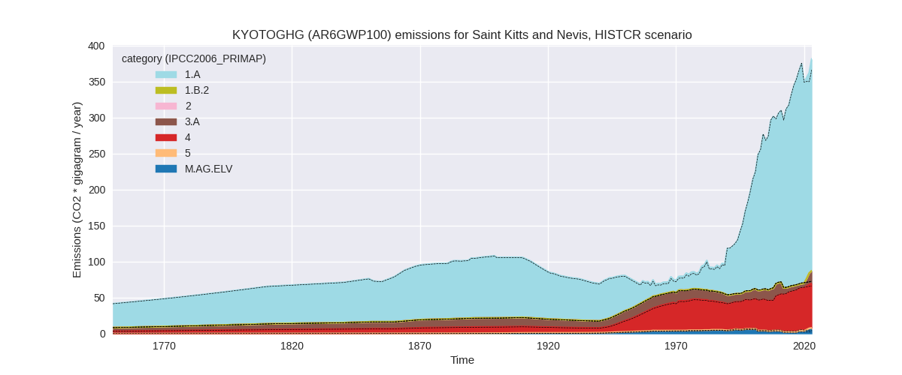
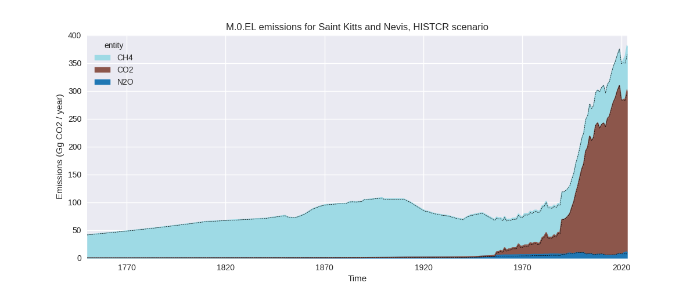
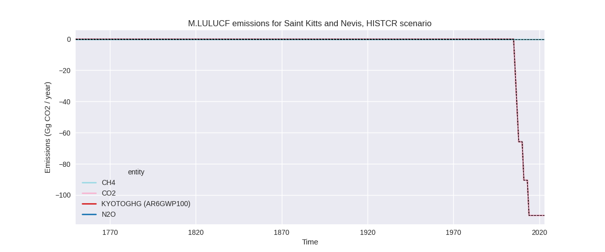
The following figures show the aggregate national total emissions excluding LULUCF AR6GWP100 for the third party priority scenario. The dotted linesshow the v2.6_final data.

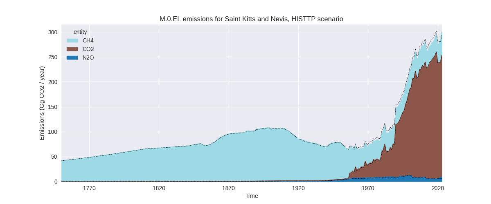
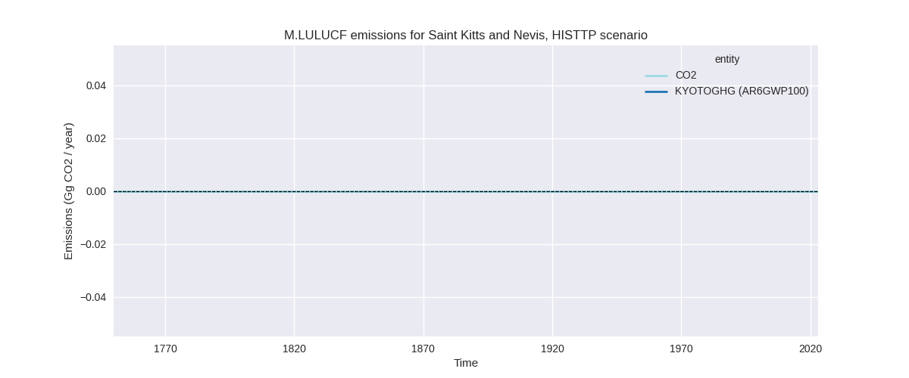
Overview over changes
In the country reported priority scenario we have the following changes for aggregate Kyoto GHG and national total emissions excluding LULUCF (M.0.EL):
- Emissions in 2023 have changed by 4.1%% (15.15 Gg CO2 / year)
- Emissions in 1990-2023 have changed by 0.1%% (0.29 Gg CO2 / year)
In the third party priority scenario we have the following changes for aggregate Kyoto GHG and national total emissions excluding LULUCF (M.0.EL):
- Emissions in 2023 have changed by 1.9%% (5.65 Gg CO2 / year)
- Emissions in 1990-2023 have changed by -2.6%% (-6.34 Gg CO2 / year)
Most important changes per scenario and time frame
In the country reported priority scenario the following sector-gas combinations have the highest absolute impact on national total KyotoGHG (AR6GWP100) emissions in 2023 (top 5):
- 1: 3.A, CH4 with 11.44 Gg CO2 / year (187.7%)
- 2: M.AG.ELV, N2O with 3.78 Gg CO2 / year (135.4%)
- 3: 5, N2O with -0.64 Gg CO2 / year (-29.9%)
- 4: 1.A, N2O with 0.47 Gg CO2 / year (19.1%)
- 5: 1.A, CH4 with 0.12 Gg CO2 / year (26.4%)
In the country reported priority scenario the following sector-gas combinations have the highest absolute impact on national total KyotoGHG (AR6GWP100) emissions in 1990-2023 (top 5):
- 1: 3.A, CH4 with 0.69 Gg CO2 / year (6.2%)
- 2: 5, N2O with -0.58 Gg CO2 / year (-33.0%)
- 3: M.AG.ELV, N2O with 0.25 Gg CO2 / year (7.4%)
- 4: 4, CH4 with -0.09 Gg CO2 / year (-0.2%)
- 5: 1.A, N2O with 0.02 Gg CO2 / year (0.8%)
In the third party priority scenario the following sector-gas combinations have the highest absolute impact on national total KyotoGHG (AR6GWP100) emissions in 2023 (top 5):
- 1: 3.A, CH4 with 10.65 Gg CO2 / year (184.8%)
- 2: 4, CH4 with -7.55 Gg CO2 / year (-20.2%)
- 3: M.AG.ELV, N2O with 2.88 Gg CO2 / year (106.3%)
- 4: 5, N2O with -0.64 Gg CO2 / year (-29.9%)
- 5: 1.A, N2O with 0.12 Gg CO2 / year (25.1%)
In the third party priority scenario the following sector-gas combinations have the highest absolute impact on national total KyotoGHG (AR6GWP100) emissions in 1990-2023 (top 5):
- 1: 4, CH4 with -6.59 Gg CO2 / year (-20.4%)
- 2: 3.A, CH4 with 0.67 Gg CO2 / year (7.0%)
- 3: 5, N2O with -0.58 Gg CO2 / year (-33.0%)
- 4: 4, N2O with 0.11 Gg CO2 / year (20.7%)
- 5: M.AG.ELV, N2O with 0.08 Gg CO2 / year (1.6%)
Notes on data changes
Here we list notes explaining important emissions changes for the country.
- No new country reported data has been included. Country reported data doesn’t cover all sectors and gases and thus the third party data has a high influence on the CR scenario are dominated by a steep emissions increase in FAO data for 2022.
- In the TP scenario the changes are for similar sectors with the addition of a high reduction of waste CH4 emissions from EDGAR data.
Changes by sector and gas
For each scenario and time frame the changes are displayed for all individual sectors and all individual gases. In the sector plot we use aggregate Kyoto GHGs in AR6GWP100. In the gas plot we usenational total emissions without LULUCF.
country reported scenario
2023
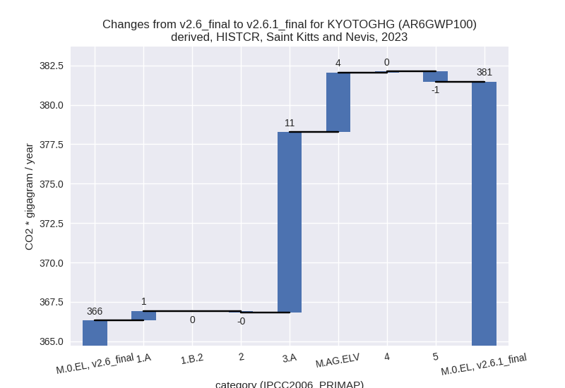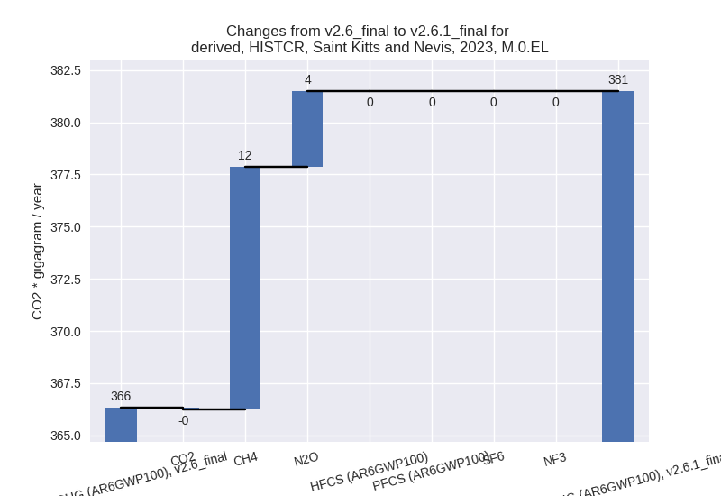
1990-2023
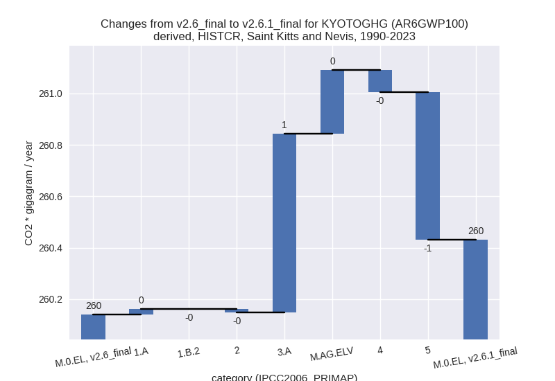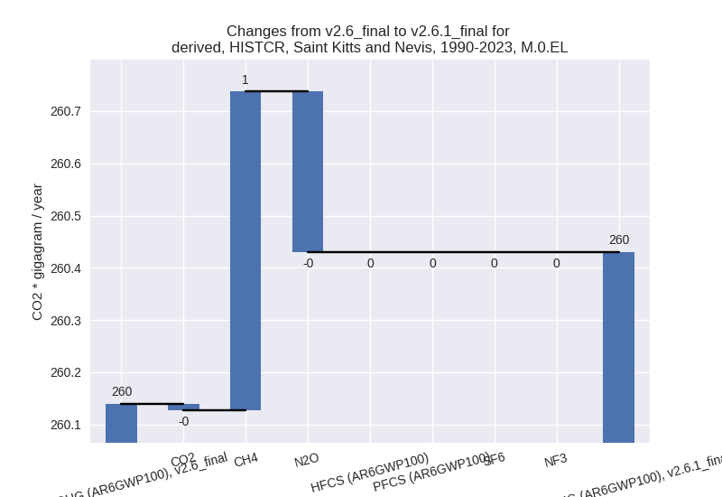
third party scenario
2023
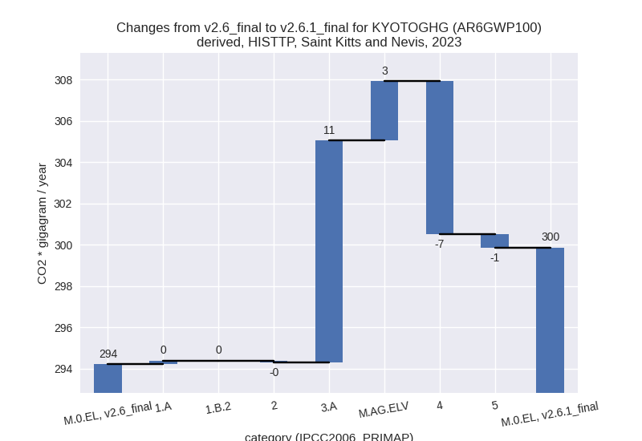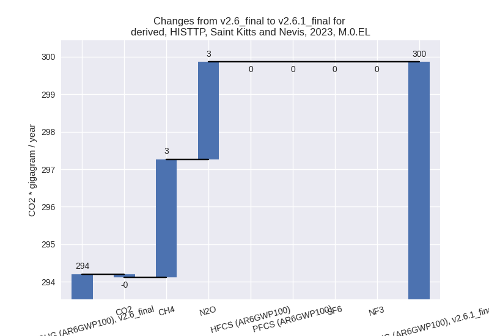
1990-2023
 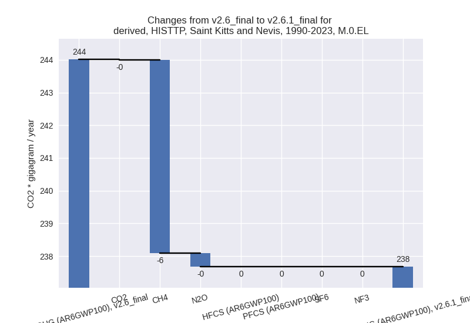
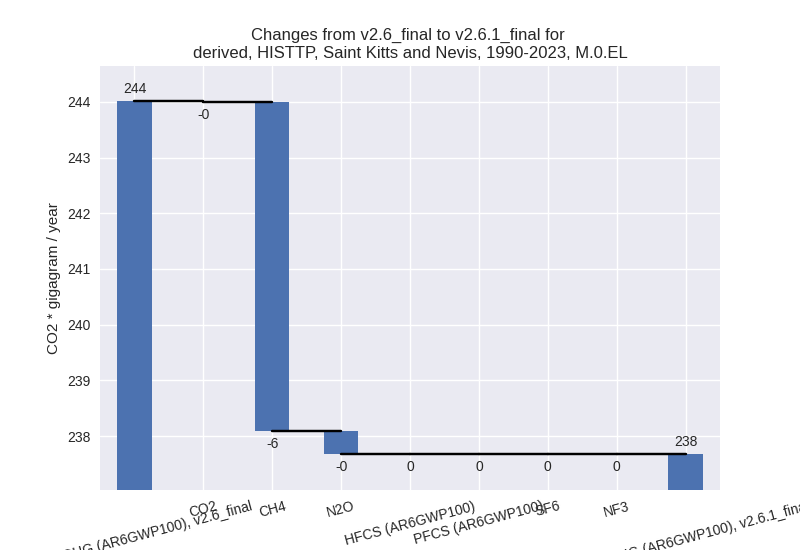
Detailed changes for the scenarios:
country reported scenario (HISTCR):
Most important changes per time frame
For 2023 the following sector-gas combinations have the highest absolute impact on national total KyotoGHG (AR6GWP100) emissions in 2023 (top 5):
- 1: 3.A, CH4 with 11.44 Gg CO2 / year (187.7%)
- 2: M.AG.ELV, N2O with 3.78 Gg CO2 / year (135.4%)
- 3: 5, N2O with -0.64 Gg CO2 / year (-29.9%)
- 4: 1.A, N2O with 0.47 Gg CO2 / year (19.1%)
- 5: 1.A, CH4 with 0.12 Gg CO2 / year (26.4%)
For 1990-2023 the following sector-gas combinations have the highest absolute impact on national total KyotoGHG (AR6GWP100) emissions in 1990-2023 (top 5):
- 1: 3.A, CH4 with 0.69 Gg CO2 / year (6.2%)
- 2: 5, N2O with -0.58 Gg CO2 / year (-33.0%)
- 3: M.AG.ELV, N2O with 0.25 Gg CO2 / year (7.4%)
- 4: 4, CH4 with -0.09 Gg CO2 / year (-0.2%)
- 5: 1.A, N2O with 0.02 Gg CO2 / year (0.8%)
Changes in the main sectors for aggregate KyotoGHG (AR6GWP100) are
- 1: Total sectoral emissions in 2022 are 277.69 Gg CO2 / year which is 76.7% of M.0.EL emissions. 2023 Emissions have changed by 0.2% (0.59 Gg CO2 / year). 1990-2023 Emissions have changed by 0.0% (0.02 Gg CO2 / year).
- 2: Total sectoral emissions in 2022 are 0.37 Gg CO2
/ year which is 0.1% of M.0.EL emissions. 2023 Emissions have changed by
-20.1% (-0.09 Gg CO2 / year).
1990-2023 Emissions have changed by -4.1% (-0.01 Gg CO2 / year). For 2023 the
changes per gas
are:

For 1990-2023 the changes per gas are:
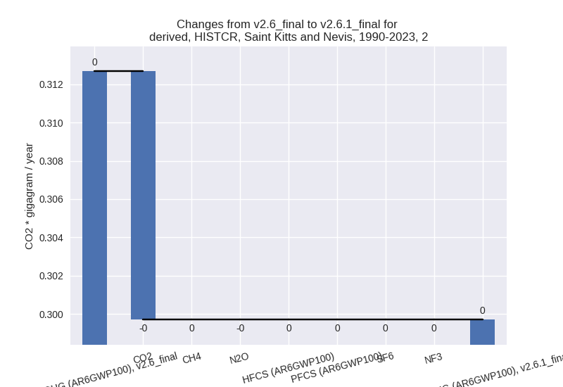 - M.AG: Total sectoral emissions in 2022 are 21.54 Gg
CO2 / year which is 6.0% of M.0.EL emissions. 2023 Emissions have
changed by 171.0% (15.23 Gg CO2 /
year). 1990-2023 Emissions have changed by 6.4% (0.94 Gg CO2 / year). For 2023 the
changes per gas
are:
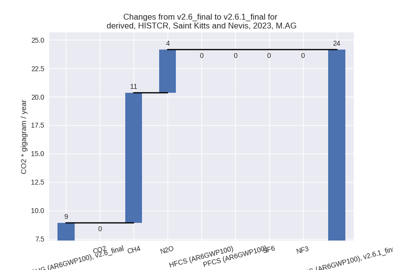
For 1990-2023 the changes per gas are:
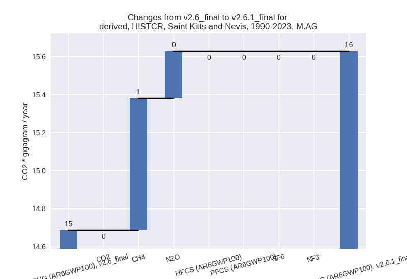
The changes come from the following subsectors:- 3.A: Total sectoral emissions in 2022 are 15.52 Gg
CO2 / year which is 72.1% of category M.AG emissions. 2023 Emissions
have changed by 187.7% (11.44 Gg CO2
/ year). 1990-2023 Emissions have changed by 6.2% (0.69 Gg CO2 / year). For 2023 the
changes per gas
are:
For 1990-2023 the changes per gas are:
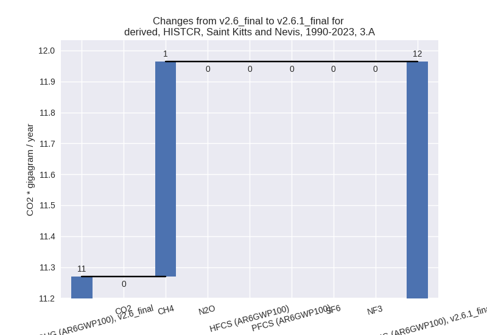
There is no subsector information available in PRIMAP-hist. - M.AG.ELV: Total sectoral emissions in 2022 are 6.02
Gg CO2 / year which is 27.9% of category M.AG emissions. 2023 Emissions
have changed by 134.8% (3.78 Gg CO2
/ year). 1990-2023 Emissions have changed by 7.3% (0.25 Gg CO2 / year). For 2023 the
changes per gas
are:
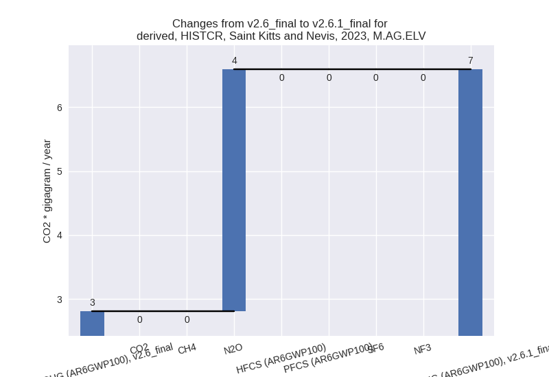
For 1990-2023 the changes per gas are:
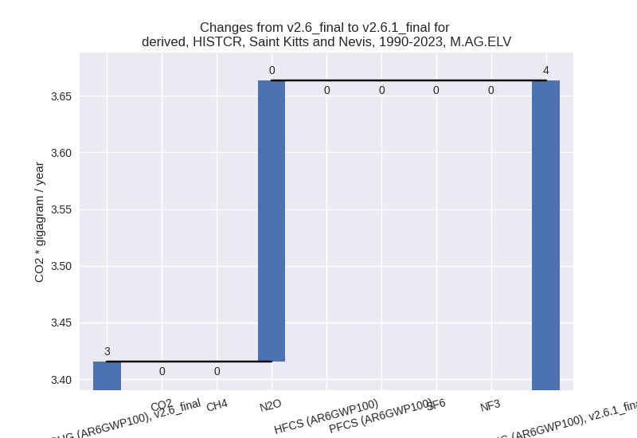
There is no subsector information available in PRIMAP-hist.
- 3.A: Total sectoral emissions in 2022 are 15.52 Gg
CO2 / year which is 72.1% of category M.AG emissions. 2023 Emissions
have changed by 187.7% (11.44 Gg CO2
/ year). 1990-2023 Emissions have changed by 6.2% (0.69 Gg CO2 / year). For 2023 the
changes per gas
are:
- 4: Total sectoral emissions in 2022 are 60.80 Gg CO2 / year which is 16.8% of M.0.EL emissions. 2023 Emissions have changed by 0.1% (0.06 Gg CO2 / year). 1990-2023 Emissions have changed by -0.2% (-0.09 Gg CO2 / year).
- 5: Total sectoral emissions in 2022 are 1.42 Gg CO2
/ year which is 0.4% of M.0.EL emissions. 2023 Emissions have changed by
-29.9% (-0.64 Gg CO2 / year).
1990-2023 Emissions have changed by -33.0% (-0.58 Gg CO2 / year). For 2023 the
changes per gas
are:
For 1990-2023 the changes per gas are:
third party scenario (HISTTP):
Most important changes per time frame
For 2023 the following sector-gas combinations have the highest absolute impact on national total KyotoGHG (AR6GWP100) emissions in 2023 (top 5):
- 1: 3.A, CH4 with 10.65 Gg CO2 / year (184.8%)
- 2: 4, CH4 with -7.55 Gg CO2 / year (-20.2%)
- 3: M.AG.ELV, N2O with 2.88 Gg CO2 / year (106.3%)
- 4: 5, N2O with -0.64 Gg CO2 / year (-29.9%)
- 5: 1.A, N2O with 0.12 Gg CO2 / year (25.1%)
For 1990-2023 the following sector-gas combinations have the highest absolute impact on national total KyotoGHG (AR6GWP100) emissions in 1990-2023 (top 5):
- 1: 4, CH4 with -6.59 Gg CO2 / year (-20.4%)
- 2: 3.A, CH4 with 0.67 Gg CO2 / year (7.0%)
- 3: 5, N2O with -0.58 Gg CO2 / year (-33.0%)
- 4: 4, N2O with 0.11 Gg CO2 / year (20.7%)
- 5: M.AG.ELV, N2O with 0.08 Gg CO2 / year (1.6%)
Changes in the main sectors for aggregate KyotoGHG (AR6GWP100) are
- 1: Total sectoral emissions in 2022 are 231.47 Gg CO2 / year which is 81.7% of M.0.EL emissions. 2023 Emissions have changed by 0.1% (0.17 Gg CO2 / year). 1990-2023 Emissions have changed by 0.0% (0.04 Gg CO2 / year).
- 2: Total sectoral emissions in 2022 are 0.37 Gg CO2
/ year which is 0.1% of M.0.EL emissions. 2023 Emissions have changed by
-20.1% (-0.09 Gg CO2 / year).
1990-2023 Emissions have changed by -4.1% (-0.01 Gg CO2 / year). For 2023 the
changes per gas
are:

For 1990-2023 the changes per gas are: - M.AG: Total sectoral emissions in 2022 are 19.96 Gg
CO2 / year which is 7.0% of M.0.EL emissions. 2023 Emissions have
changed by 156.6% (13.64 Gg CO2 /
year). 1990-2023 Emissions have changed by 4.5% (0.70 Gg CO2 / year). For 2023 the
changes per gas
are:
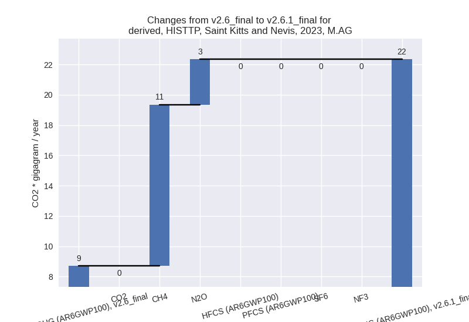
For 1990-2023 the changes per gas are:
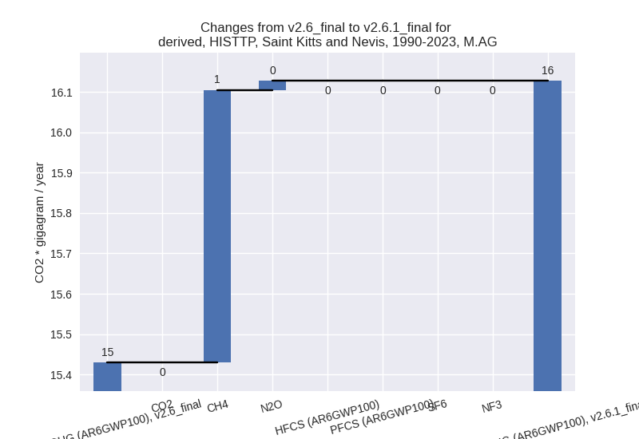
The changes come from the following subsectors:- 3.A: Total sectoral emissions in 2022 are 14.84 Gg
CO2 / year which is 74.4% of category M.AG emissions. 2023 Emissions
have changed by 179.7% (10.76 Gg CO2
/ year). 1990-2023 Emissions have changed by 6.1% (0.61 Gg CO2 / year). For 2023 the
changes per gas
are:
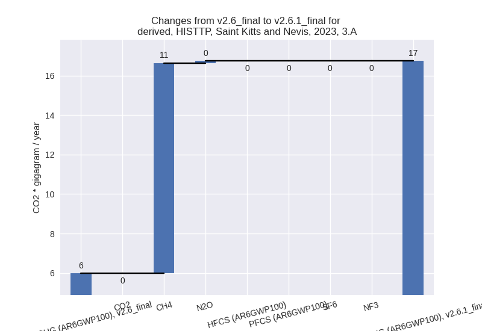
For 1990-2023 the changes per gas are:
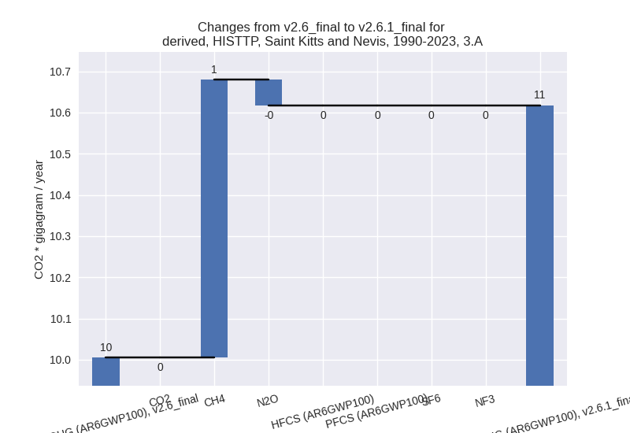
There is no subsector information available in PRIMAP-hist. - M.AG.ELV: Total sectoral emissions in 2022 are 5.12
Gg CO2 / year which is 25.6% of category M.AG emissions. 2023 Emissions
have changed by 105.8% (2.88 Gg CO2
/ year). 1990-2023 Emissions have changed by 1.6% (0.08 Gg CO2 / year). For 2023 the
changes per gas
are:
There is no subsector information available in PRIMAP-hist.
- 3.A: Total sectoral emissions in 2022 are 14.84 Gg
CO2 / year which is 74.4% of category M.AG emissions. 2023 Emissions
have changed by 179.7% (10.76 Gg CO2
/ year). 1990-2023 Emissions have changed by 6.1% (0.61 Gg CO2 / year). For 2023 the
changes per gas
are:
- 4: Total sectoral emissions in 2022 are 30.25 Gg
CO2 / year which is 10.7% of M.0.EL emissions. 2023 Emissions have
changed by -19.5% (-7.43 Gg CO2 /
year). 1990-2023 Emissions have changed by -19.8% (-6.48 Gg CO2 / year). For 2023 the
changes per gas
are:
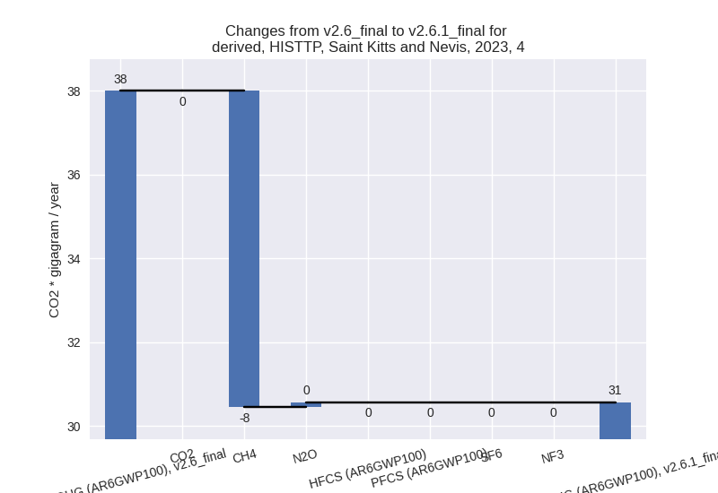
For 1990-2023 the changes per gas are:
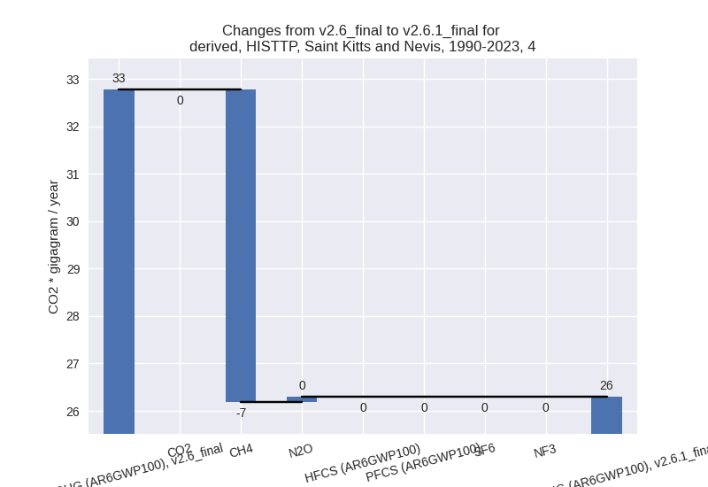 - 5: Total sectoral emissions in 2022 are 1.42 Gg CO2
/ year which is 0.5% of M.0.EL emissions. 2023 Emissions have changed by
-29.9% (-0.64 Gg CO2 / year).
1990-2023 Emissions have changed by -33.0% (-0.58 Gg CO2 / year). For 2023 the
changes per gas
are:
For 1990-2023 the changes per gas are:
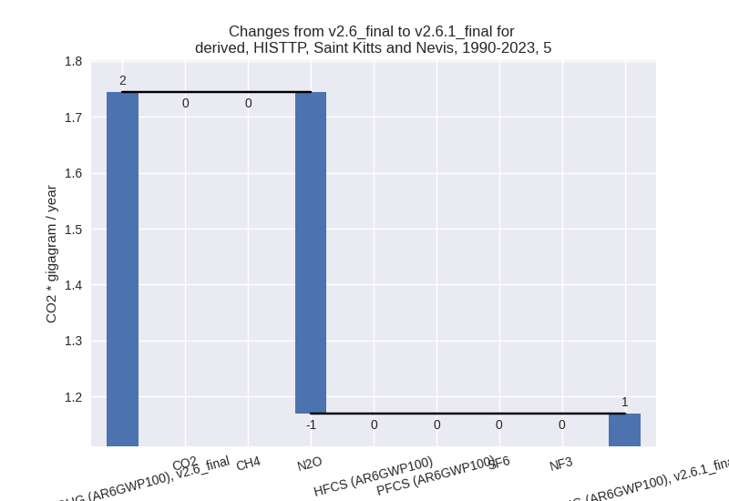